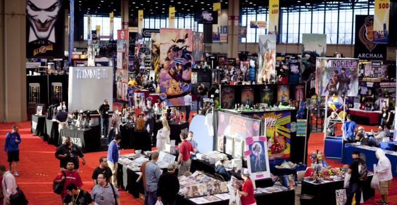

Tokyo Disney Resort

Pues bien, este parque tiene un excelente en todo, ya que todas sus gigantescas áreas son temáticamente perfectas, la atención de los empleados exquisita, restauración temática y buena, efectos especiales por todas partes, buena organización de inmensas masas de visitantes, y por supuesto atracciones first-class que aunque llueva podrás disfrutar de TODAS ellas.
Convenciones Anime
Obviamente la primera vez que vas a una convención, es como cuando vas a tu escuela por primera ocasión y estás asombrado por todo lo que ves; cientos de estanterías, juegos libres, animes conocidos y desconocidos, comida japonesa y personas llevando su cosplay. De verdad les digo que la primera vez que fui me encantó todo lo que vi, y me la pasé muy bien. Me fascinaba ver que había tantos espacios recreativos para pasarla bien. Concursos, Karaokes y un Restaurant.